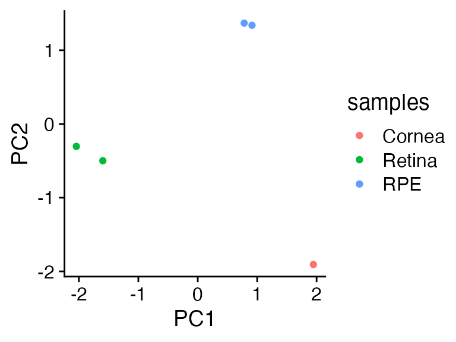
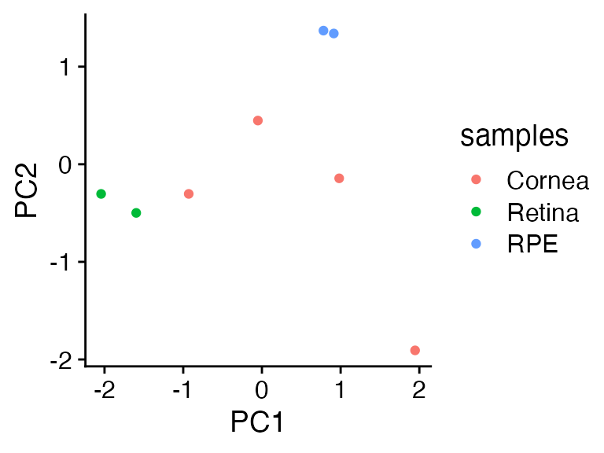
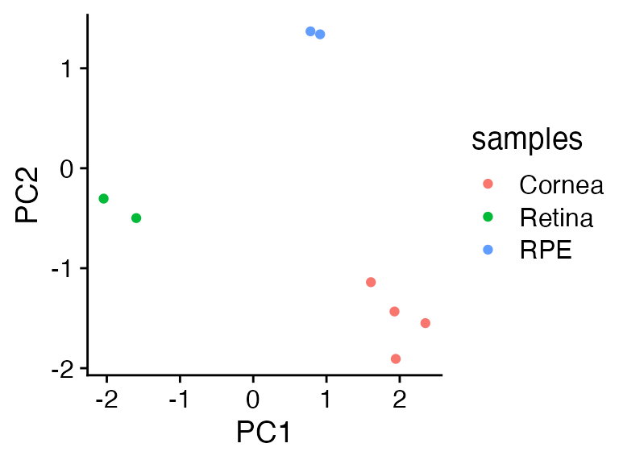
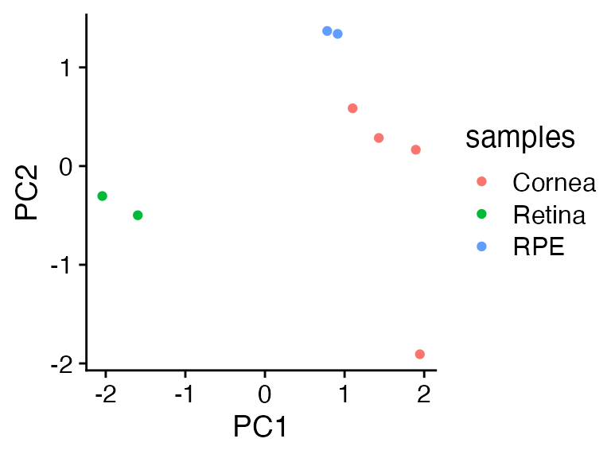
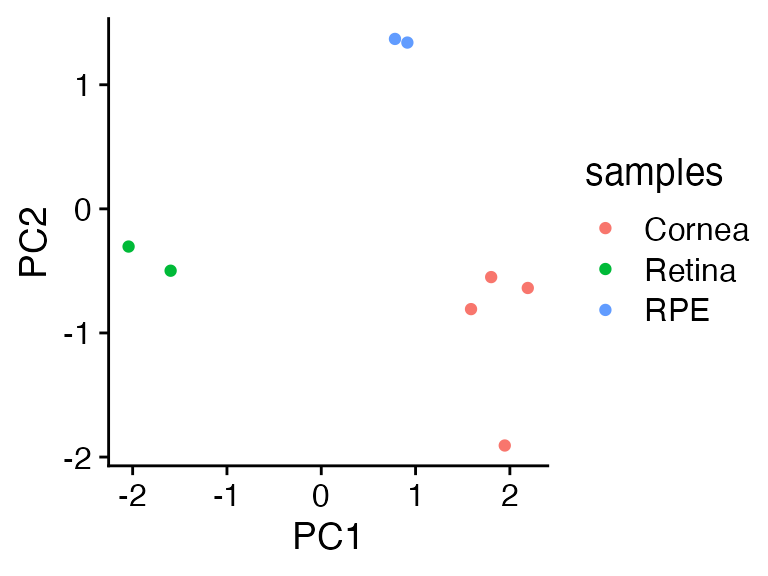

So many ways to screw up PCA projection
2023-07-25
So_many_ways_to_screw_up_PCA_projection.RmdIntroduction
When you run prcomp you get two matrices back:
$x and $rotation. The former is the “pattern
matrix” which are the factors (principal components) by samples. The
latter is the amplitude matrix, which are the loadings of the features
(genes) with the factors (principal compoent); row by column,
respectively.
In theory you can use a rotation (loadings) matrix from
prcomp (the $rotation slot) to multiply against a new
matrix to get the new matrix in the same eigenvector space as the
original matrix.
This is handy! This means you can use an existing PCA you understand and have spent time interpreting and transfer that knowledge onto new data.
In practice, though, there a wide variety of reasons this can fail. Let us explore why.
Toy Data
Let’s make a tiny little faux dataset. Threetissue types with five
genes. We log1p scale the data as raw gene counts are
skewed, run prcomp, then plot the first two principal
components (PC). They do a nice job turning three major axes of
variation into two informative eigenvalues/PCs.
library(dplyr)
library(ggplot2)
genes <- c('RHO','RPE65','ABCA4','PMEL', 'KRT5')
samples <- c('Retina1','Retina2','RPE1','RPE2','Cornea1')
faux_mat <- cbind(c(560,650,5,6,9), # rho
c(42,32, 1103,1201,2), #rpe65
c(810,903,202,205,45), #abca4
c(100,105,2004,1980,101),# pmel
c(3,32,101,202,1867)) |> data.frame()# krt5
colnames(faux_mat) <- genes
row.names(faux_mat) <- samples
faux_pca <- prcomp(log1p(faux_mat), scale = TRUE, center = TRUE)
faux_pca$x |>
as_tibble(rownames = 'samples') |>
mutate(samples = gsub('\\d','',samples)) |>
ggplot(aes(x=PC1,y=PC2,color=samples)) +
geom_point() +
cowplot::theme_cowplot()
Matrix Multiplication
The pattern matrix (plotted above) can be recreated by multiplying
the input_matrix by the rotation matrix (the $rotation
slot).
Wait, that’s wrong….the numbers are very different. PC1 should range from about -2 to 2, but now runs from -5 to 3.
as.matrix(log1p(faux_mat)) %*% faux_pca$rotation
#> PC1 PC2 PC3 PC4 PC5
#> Retina1 -3.665190 6.706788 -7.344774 -0.19334184 3.146782
#> Retina2 -2.829324 5.805728 -9.090433 -0.17940189 3.181682
#> RPE1 3.019202 8.865143 -8.318996 -0.03906449 1.680128
#> RPE2 3.263775 8.661185 -8.930563 -0.21079129 1.690195
#> Cornea1 2.472395 1.693552 -9.136326 1.37485738 2.225891What happened? If we investigate the prcomp
documentation we see that the input data, by default, is scaled across
the features. If we apply the scale function to our log1p
scaled faux_mat we get a matrix which exactly matches the
prcomp $x slot.
scale(log1p(faux_mat)) %*% faux_pca$rotation
#> PC1 PC2 PC3 PC4 PC5
#> Retina1 -2.057963 0.2320273 0.36944476 -0.0116954785 8.204038e-16
#> Retina2 -1.701178 -0.1366033 -0.42140684 0.0118873413 4.905776e-16
#> RPE1 1.254511 1.1468746 0.12984655 0.0347133588 -6.470796e-17
#> RPE2 1.360317 1.0552042 -0.14052654 -0.0345002389 -4.941149e-17
#> Cornea1 1.144313 -2.2975028 0.06264207 -0.0004049826 -4.716018e-17
(scale(log1p(faux_mat)) %*% faux_pca$rotation) == faux_pca$x
#> PC1 PC2 PC3 PC4 PC5
#> Retina1 TRUE TRUE TRUE TRUE TRUE
#> Retina2 TRUE TRUE TRUE TRUE TRUE
#> RPE1 TRUE TRUE TRUE TRUE TRUE
#> RPE2 TRUE TRUE TRUE TRUE TRUE
#> Cornea1 TRUE TRUE TRUE TRUE TRUEThree fake cornea tissues
Now we have new data. Three cornea samples. We want to compare these
new cornea samples to our existing PCA to see how they compare. As
discussed above, we should be able to just matrix multiply this
new matrix against the original pca $loading slot to put
the new data in the same PC space.
OK, let’s try projecting some new data!
We apply all of knowledge and scale the new data before we matrix multiply it against the rotation matrix.
What the? The three new samples are … in the middle??? Why??????
new_project <- scale(log1p(new_data)) %*% faux_pca$rotation
# we bind rows to glue together the original PCA (faux_pca$x)
# with the new data's PC space (new_project)
bind_rows(as_tibble(faux_pca$x, rownames = 'samples'),
as_tibble(new_project, rownames = 'samples')) |>
mutate(samples = gsub('\\d','',samples)) |>
ggplot(aes(x=PC1,y=PC2,color=samples)) +
geom_point() +
cowplot::theme_cowplot()
What scale does
scale takes the columns and, by default, will center
(mean 0) and scale (divide by the standard deviation).
The issue is that because you only have one sample type with
fairly similar expression patterns across all the genes, the
scaling turns everything into similar values. Which centers
them around 0, in effect when multiplying by the prcomp
rotation matrix.
scale(new_data)
#> RHO RPE65 ABCA4 PMEL KRT5
#> Cornea2 0.2182179 0.7559289 1.1295751 0.8642016 0.9500860
#> Cornea3 0.8728716 -1.1338934 -0.3573146 0.2311237 -1.0433761
#> Cornea4 -1.0910895 0.3779645 -0.7722605 -1.0953253 0.0932901
#> attr(,"scaled:center")
#> RHO RPE65 ABCA4 PMEL KRT5
#> 4.666667 5.000000 32.333333 93.333333 2180.000000
#> attr(,"scaled:scale")
#> RHO RPE65 ABCA4 PMEL KRT5
#> 1.527525 2.645751 28.919428 33.171273 407.331560How to fix?
with stats::predict
If you use the stats::predict tool, then it will use the
scaling information in the prcomp object to scale your new
data with the same scale and center values used in in the
prcomp scale/center steps.
with_predict <- predict(faux_pca, (log1p(new_data)))
bind_rows(as_tibble(faux_pca$x, rownames = 'samples'),
as_tibble(with_predict, rownames = 'samples')) |>
mutate(samples = gsub('\\d','',samples)) |>
ggplot(aes(x=PC1,y=PC2,color=samples)) +
geom_point() +
cowplot::theme_cowplot()
Yay all is well in the world!
plot twist
In RNA-seq data it is common to have wildly different sum counts. That is because a sequencing machine can create 10,000,000 reads for one sample or 100,000,000 reads. Or even more!
Let’s try stats::prcomp again with the same new_data,
just scaled up 20x.
Ugh, now the new cornea samples look more like the RPE.
with_predict <- predict(faux_pca, (log1p(new_data*20)))
bind_rows(as_tibble(faux_pca$x, rownames = 'samples'),
as_tibble(with_predict, rownames = 'samples')) |>
mutate(samples = gsub('\\d','',samples)) |>
ggplot(aes(x=PC1,y=PC2,color=samples)) +
geom_point() +
cowplot::theme_cowplot()
OK, so this is fixable….
You can either re-do the original PCA with a fixed sample scale (like cpm) and/or alter the new data to have a similar scale to the input data PCA.
But to recap, at this point we have discussed several issues that can make data projection challenging:
- log scaling of input data
- log scaling of new data
- row scaling (feature/genes) within prcomp needs to be applied in the same way to the new data
- unequal sum counts of the samples need to be normalized either at
the first
prcompstep or by adjusting the new data
There are even more little annoyances that I have not discussed:
- highly variable gene selection is usually done so you don’t do PCA on 20,000+ genes.
- this means that the new data needs to be exactly matched at the feature/gene level to whatever the highly variable genes used in the prcomp step
- if you are using a new a RNA seq dataset from a different quantification setup than the original data the gene names can be slightly different, which means you may have a handful of missing features/genes that have to be addressed in some way otherwise the matrix multiplication will fail…
wow, if only someone wrote a R package that could handle all of the issues so I can get on with my analysis!
Good news, I did: metamoRph
There are two steps:
- A
run_pcawrapper aroundprcompwhich, by default, will:
- CPM scale the samples
- log1p scale the data
- remove zero count genes
- row scale and center the genes
- tries to remove mitochondrial and ribosomal genes which are often not useful for scRNA analysis
- offers two ways to select highly variable genes: “scran” which uses
a count scaled variance selection approach (higher expressed
genes/features will naturally have higher variance) or the “classic”
approach which just uses
matrixStats::rowVar - calculates the % standard deviation explained by each PC
- returns a list object with the prcomp object, the parameters chosen, the center/scale values, and the % standard deviation explained by each PC
-
metamoRphfunction which takes two or three inputs:
- your new counts matrix
- the
$rotationmatrix fromprcomp - optionally the center/scale values from
prcomp
and then
- will align the feature/gene names from the input data to the rotation matrix
- scale the data in all directions discussed above
- return the
$xequivalent PC space
Let’s see it in practice with the 10x scaled input data that tripped
up stats::predict
There two only two steps:
-
run_pcawhich runs the prcomp with the settings discussed above -
metamoRphwhich takes the new data and projects it onto themm_pcaspace
library(metamoRph)
mm_pca <- run_pca(t(faux_mat), meta = samples |> data.frame(), sample_scale = 'seurat')
projected_pca <- metamoRph(t(new_data*10),
mm_pca$PCA$rotation,
center_scale = mm_pca$center_scale, sample_scale = 'seurat')
bind_rows(as_tibble(faux_pca$x, rownames = 'samples'),
as_tibble(projected_pca, rownames = 'samples')) |>
mutate(samples = gsub('\\d','',samples)) |>
ggplot(aes(x=PC1,y=PC2,color=samples)) +
geom_point() +
cowplot::theme_cowplot()
sessionInfo()
#> R version 4.3.0 (2023-04-21)
#> Platform: aarch64-apple-darwin20 (64-bit)
#> Running under: macOS Ventura 13.4.1
#>
#> Matrix products: default
#> BLAS: /Library/Frameworks/R.framework/Versions/4.3-arm64/Resources/lib/libRblas.0.dylib
#> LAPACK: /Library/Frameworks/R.framework/Versions/4.3-arm64/Resources/lib/libRlapack.dylib; LAPACK version 3.11.0
#>
#> locale:
#> [1] en_US.UTF-8/en_US.UTF-8/en_US.UTF-8/C/en_US.UTF-8/en_US.UTF-8
#>
#> time zone: America/New_York
#> tzcode source: internal
#>
#> attached base packages:
#> [1] stats graphics grDevices utils datasets methods base
#>
#> other attached packages:
#> [1] metamoRph_0.2.0 ggplot2_3.4.2 dplyr_1.1.2
#>
#> loaded via a namespace (and not attached):
#> [1] tidyselect_1.2.0 farver_2.1.1
#> [3] bitops_1.0-7 fastmap_1.1.1
#> [5] SingleCellExperiment_1.22.0 RCurl_1.98-1.12
#> [7] bluster_1.9.1 digest_0.6.31
#> [9] rsvd_1.0.5 lifecycle_1.0.3
#> [11] cluster_2.1.4 statmod_1.5.0
#> [13] magrittr_2.0.3 compiler_4.3.0
#> [15] rlang_1.1.1 sass_0.4.6
#> [17] tools_4.3.0 igraph_1.4.3
#> [19] utf8_1.2.3 yaml_2.3.7
#> [21] knitr_1.43 dqrng_0.3.0
#> [23] S4Arrays_1.0.4 labeling_0.4.2
#> [25] DelayedArray_0.26.6 BiocParallel_1.33.11
#> [27] withr_2.5.0 purrr_1.0.1
#> [29] BiocGenerics_0.46.0 desc_1.4.2
#> [31] grid_4.3.0 stats4_4.3.0
#> [33] fansi_1.0.4 beachmat_2.15.0
#> [35] colorspace_2.1-0 edgeR_3.42.2
#> [37] scales_1.2.1 SummarizedExperiment_1.30.1
#> [39] cli_3.6.1 rmarkdown_2.21
#> [41] crayon_1.5.2 ragg_1.2.5
#> [43] generics_0.1.3 metapod_1.7.0
#> [45] rstudioapi_0.14 DelayedMatrixStats_1.21.0
#> [47] scuttle_1.9.4 cachem_1.0.8
#> [49] stringr_1.5.0 zlibbioc_1.46.0
#> [51] parallel_4.3.0 XVector_0.40.0
#> [53] matrixStats_0.63.0 vctrs_0.6.2
#> [55] Matrix_1.5-4.1 jsonlite_1.8.4
#> [57] BiocSingular_1.15.0 IRanges_2.34.0
#> [59] S4Vectors_0.38.1 BiocNeighbors_1.17.1
#> [61] irlba_2.3.5.1 systemfonts_1.0.4
#> [63] locfit_1.5-9.7 limma_3.56.1
#> [65] tidyr_1.3.0 jquerylib_0.1.4
#> [67] glue_1.6.2 pkgdown_2.0.7
#> [69] codetools_0.2-19 cowplot_1.1.1
#> [71] stringi_1.7.12 gtable_0.3.3
#> [73] GenomeInfoDb_1.36.0 GenomicRanges_1.52.0
#> [75] ScaledMatrix_1.8.1 munsell_0.5.0
#> [77] tibble_3.2.1 pillar_1.9.0
#> [79] htmltools_0.5.5 GenomeInfoDbData_1.2.10
#> [81] R6_2.5.1 textshaping_0.3.6
#> [83] sparseMatrixStats_1.11.1 rprojroot_2.0.3
#> [85] evaluate_0.21 lattice_0.21-8
#> [87] Biobase_2.60.0 highr_0.10
#> [89] memoise_2.0.1 scran_1.27.1
#> [91] bslib_0.5.0 Rcpp_1.0.10
#> [93] xfun_0.39 fs_1.6.2
#> [95] MatrixGenerics_1.12.0 pkgconfig_2.0.3